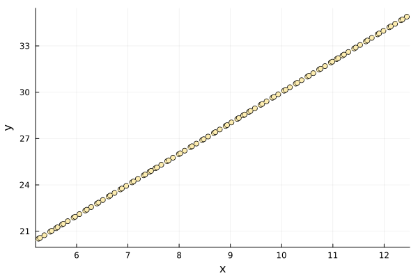
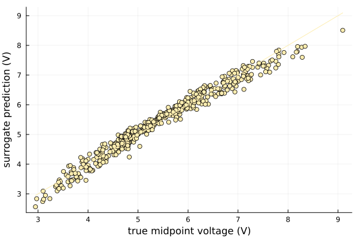

Linear Surrogate
The linear surrogate models a scalar response as an affine function of the explanatory variables: an intercept plus one slope per input dimension, fitted by least squares. It is exact whenever the data are affine, and otherwise returns the best affine approximation in the least-squares sense. Responses may be scalars or vectors; vector responses are fitted one output per column.
We will build one for
\[f(x) = 2x + 10\]
which is affine, so the surrogate should recover it exactly.
First of all we have to import these two packages: Surrogates and Plots.
using Surrogates
using PlotsSampling
We choose to sample f in 100 points between 0 and 10 using the sample function. The sampling points are chosen using a Sobol sequence, this can be done by passing SobolSample() to the sample function.
f(x) = 2 * x + 10.0
n_samples = 100
lower_bound = 5.2
upper_bound = 12.5
x = sample(n_samples, lower_bound, upper_bound, SobolSample())
y = f.(x)
scatter(x, y, label = "Sampled points", xlims = (lower_bound, upper_bound))
plot!(f, label = "True function", xlims = (lower_bound, upper_bound))
Building a Surrogate
With our sampled points, we can build the Linear Surrogate using the LinearSurrogate function.
We can simply calculate linear_surrogate for any value.
my_linear_surr_1D = LinearSurrogate(x, y, lower_bound, upper_bound)
val = my_linear_surr_1D(5.0)20.0The fitted coefficients are stored as [intercept; slopes], so for this data they should be close to [10, 2]:
my_linear_surr_1D.coeff2-element Vector{Float64}:
10.0
1.9999999999999998Now, we will simply plot linear_surrogate:
plot(x, y, seriestype = :scatter, label = "Sampled points",
xlims = (lower_bound, upper_bound))
plot!(f, label = "True function", xlims = (lower_bound, upper_bound))
plot!(my_linear_surr_1D, label = "Surrogate function", xlims = (lower_bound, upper_bound))Optimizing
Having built a surrogate, we can now use it to search for minima in our original function f.
To optimize using our surrogate we call surrogate_optimize! method. We choose to use Stochastic RBF as the optimization technique and again Sobol sampling as the sampling technique.
surrogate_optimize!(
f, SRBF(), lower_bound, upper_bound, my_linear_surr_1D, SobolSample())
scatter(x, y, label = "Sampled points")
plot!(f, label = "True function", xlims = (lower_bound, upper_bound))
plot!(my_linear_surr_1D, label = "Surrogate function", xlims = (lower_bound, upper_bound))Vector-valued responses
A single surrogate can model several outputs at once. Pass a vector of responses per sample; the design matrix is shared, so each output is fitted independently and the prediction comes back in the same container.
using Surrogates
f(x) = [2x + 10, -x + 3]
lower_bound = 5.2
upper_bound = 12.5
x = sample(50, lower_bound, upper_bound, SobolSample())
y = f.(x)
multi = LinearSurrogate(x, y, lower_bound, upper_bound)(::LinearSurrogate{Vector{Float64}, Vector{Vector{Float64}}, Matrix{Float64}, Float64, Float64}) (generic function with 2 methods)coeff gains one column per output, still laid out as [intercept; slopes]:
multi.coeff2×2 Matrix{Float64}:
10.0 3.0
2.0 -1.0multi(7.0), f(7.0)([23.999999999999996, -4.0], [24.0, -4.0])Linear Surrogate tutorial (ND)
A linear surrogate is the right tool when the response is dominated by a global trend: it is cheap, needs few samples, and its coefficients are directly interpretable as sensitivities. The OTL circuit is a standard benchmark of that kind — the midpoint voltage of a transformerless push-pull circuit, a smooth function of six physical parameters that is close to, but not exactly, affine.
using Surrogates
using Plots
function otl_circuit(x)
Rb1, Rb2, Rf, Rc1, Rc2, beta = x
Vb1 = 12 * Rb2 / (Rb1 + Rb2)
denom = beta * (Rc2 + 9) + Rf
return (Vb1 + 0.74) * beta * (Rc2 + 9) / denom +
11.35 * Rf / denom +
0.74 * Rf * beta * (Rc2 + 9) / (denom * Rc1)
endotl_circuit (generic function with 1 method)Sampling
The six inputs are two bias resistances, a feedback resistance, two collector resistances, and the transistor current gain, each with its own physical range.
lower_bound = [50.0, 25.0, 0.5, 1.2, 0.25, 50.0]
upper_bound = [150.0, 70.0, 3.0, 2.5, 1.2, 300.0]
x = sample(200, lower_bound, upper_bound, SobolSample())
y = otl_circuit.(x)
extrema(y)(2.9638155349662942, 8.633685059319195)Building a surrogate
my_linear_ND = LinearSurrogate(x, y, lower_bound, upper_bound)
my_linear_ND.coeff7-element Vector{Float64}:
5.53998334868828
-0.027345213531566718
0.05593078984697414
0.41386401350738455
-0.40864208381552697
0.0036603230832175674
1.7949103775570992e-5With six inputs there is no surface to look at, so the fit is judged by comparing predictions against held-out samples. Points on the diagonal are exact.
using Statistics
held_out = sample(500, lower_bound, upper_bound, HaltonSample())
truth = otl_circuit.(held_out)
predicted = my_linear_ND.(held_out)
residuals = truth .- predicted
R2 = 1 - sum(abs2, residuals) / sum(abs2, truth .- mean(truth))
rmse = sqrt(mean(abs2, residuals))
R2, rmse(0.9718246141337933, 0.19224220382315307)scatter(truth, predicted, label = "Held-out points",
xlabel = "true midpoint voltage (V)", ylabel = "surrogate prediction (V)")
plot!(truth, truth, label = "Exact")
Reading the coefficients
Because the model is affine, each slope is the change in output per unit change in that input. Slopes are not comparable across inputs directly, since the inputs have very different ranges — multiplying by the width of each range gives the influence of moving that input across its whole domain.
names = ["Rb1", "Rb2", "Rf", "Rc1", "Rc2", "beta"]
influence = my_linear_ND.coeff[2:end] .* (upper_bound .- lower_bound)
sort(collect(zip(names, round.(influence, digits = 3))), by = t -> -abs(t[2]))6-element Vector{Tuple{String, Float64}}:
("Rb1", -2.735)
("Rb2", 2.517)
("Rf", 1.035)
("Rc1", -0.531)
("beta", 0.004)
("Rc2", 0.003)The feedback and collector resistances have the largest slopes, but the bias resistances swing the output most over their operating ranges — the kind of screening result a linear surrogate is built for.
Optimizing
surrogate_optimize!(
otl_circuit, SRBF(), lower_bound, upper_bound, my_linear_ND, SobolSample(),
maxiters = 20)((149.609375, 25.17578125, 1.271484375, 1.916015625, 0.7955078125, 254.1015625), 2.9638155349662942)The proposed points are appended to the surrogate's own sample list:
length(x), length(my_linear_ND.x)(200, 239)